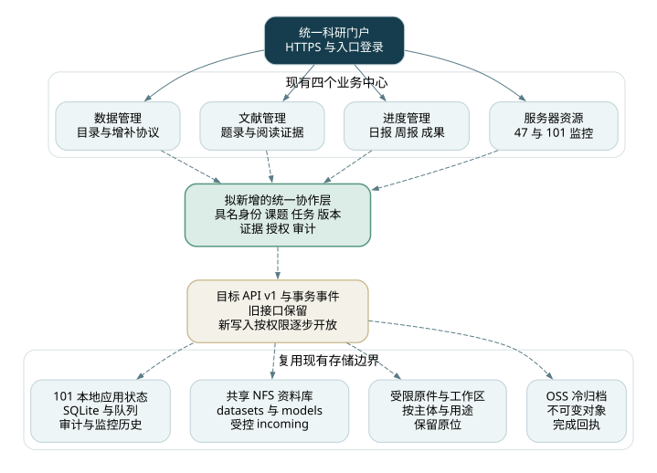
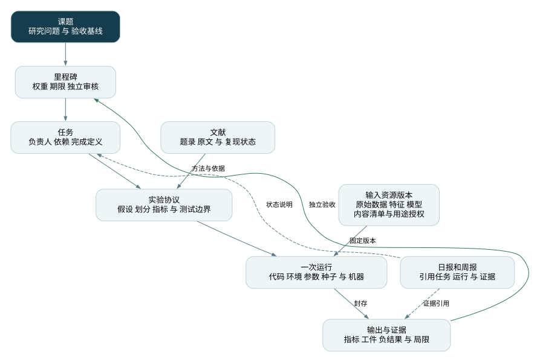

科研管理平台整体建设方案
先把已有的目录、资料、报告和服务器，统一到可追溯的课题交付流程中。建议先解决容量与责任边界，再以一个真实课题验证统一对象、接口和协作规则。
一 建议采用的整体方案
以课题及其可验收交付作为管理主线，保留数据、文献、进度、服务器四个业务中心。在现有目录服务与单协调器基础上，补齐统一身份、逻辑资源与版本、实验记录、证据关系、用途授权和审计。先让一个课题从资料准备走到里程碑验收，再按同一规则扩展。
“地基”应先确定六件事：管理什么对象、谁负责、哪一份记录有权修改、状态如何流转、用什么证据验收、失败后如何恢复。页面分类、智能总结和数据迁移应建立在这些规则上。

二 现场事实与优先级
2026年11月13日约21时01分至21时05分，通过现有 rmp 账户只读核对 101、47 两台服务器，读取当前目录清册、应用状态与有限目录元数据；通过已打开的飞书页面读取全部69条记录。未读取受试者样本、训练日志或模型权重，也未绕过拒绝访问的目录。
| 级别 | 核对结果 | 影响与动作 |
|---|---|---|
| P0 | 101 /data 使用99.57% 仅余43.18 GiB | 应用周报与文献仍位于该盘；先制定新增大文件写入限制、容量预算和由目录负责人确认的回收/迁移计划。不得自动清理或打断训练。 |
| P0 | 47、101 各8张72GB显卡；本次47为空闲快照，101的4、6、7卡在用 | 这是瞬时观测；预约和利用率报告须用带覆盖率的历史数据。历史139服务器仅见于旧文档，本次不推定已退役或仍可用。 |
| P1 | 229条登记的逻辑身份及内容版本均未确认；清册中维护人与许可状态均未补齐 | 这是门户元数据缺口，不能据此断言全部资料没有许可；飞书已有部分授权线索，应逐条映射。 |
| P1 | 补充台账69条中68条的跟进人专栏为空 | 申请或提供人等文字中存在人员线索；应明确跟进责任人，不能直接把申请人设为全库维护人。 |
| P1 | 增补协调器与定时器在运行；1个任务failed，published为0 | active代表心跳，尚不能证明真实增补发布闭环已成功。应先诊断失败原因，再用受控小样验收。 |
| P1 | 文献库336条全部为bibliography；整理任务日志0条 | 题录基础可复用；原文、解读、证据和复现状态需分别建模。 |
| P1 | 当前进度数据目录发现2份正式周报Markdown、未发现日报Markdown | 仅为该目录本次计数，不能代表全部成员的真实科研活动；个人报告需要接入课题任务引用。 |
| P1 | 现有冷备回执最近为11月13日03时42分，包含发行包与目录库、增补库 | 该回执不覆盖完整数据、周报文献原件及监控历史，也不证明完整恢复演练通过。 |
三 依据现状建立统一存储地图
| 位置 | 现场状态 | 规范定位 |
|---|---|---|
101:/var/lib/research-data-center/workspace | 现有门户工作区；目录SQLite在本机根盘 | 保留现有目录读模型；新增协作状态优先落本机受控状态目录，先验证容量与备份。 |
101:/data/rmp/research-progress101:/data/rmp/papers | 当前进度与文献原件、状态所在 | 近期补齐独立备份与容量监控；应用状态迁移需单独制定一致快照、路径切换及回滚步骤。 |
/data/share/datasets/data/share/models | 两机挂到同一NFS源10.0.0.202:/share；共享总量10.64 TiB，余2.69 TiB | 统一共享存储ID，容量只计一次；canonical资源和按协议发布的managed版本保留原结构。 |
101:/data/datasets101:/data/models | 已为共享库兼容软链 | 只作为旧路径别名，不建立重复资源。 |
47:/data/datasets47:/data/models | 仍为本地真实目录；本次未核定与共享库的内容对应关系 | 作为独立location登记，标记候选副本；不得当作101软链，也不得直接删除。 |
/data/users/<user>/datasets | 飞书多项指向47个人数据目录；rmp在47对已知目录PermissionError；101存在同类目录但内容集合不同 | 保留原位；“server_id+绝对路径+授权主体”共同定位，不能以同名路径判定同一内容。 |
学校/mnt/hd、铭凡/projects、成员本地Windows | 本次仅核对飞书记载，未现场登录这些节点 | 登记external_reference位置与最近证据时间；显示未复核，不能列为当前可用算力或直接下载入口。 |
/data/services、/data/shared、/data/fmn | 两机存在这些独立入口；本次只核顶层，未查具体业务内容 | 作为运维或业务目录单独认领；不因位于/data就自动归入公共数据集。 |
/data/share/VITAL-RAG-ICLR27-revision | 共享根直属研究目录，位于现有datasets/models/public三类根之外 | 认领课题与维护人，以原位location接入；不强制搬迁。 |
/data/share/public/<user> | 17个人工作区；含实验与交付工件 | 按项目和运行组织新产物，已有内容保留；public名称不表示开放许可。 |
/data/share/incoming/<user>/<id> | 已存在17个成员bucket；现有2.0接收约束继续有效 | 普通成员提交payload和README；结构化接手、READY及正式发布由管理员和协调器完成。 |
/data/share_cold | fuse.ossfs对象存储挂载；df容量为不适用值 | 仅用于不可变归档和可核验完成回执，不放活跃SQLite、队列或跨机锁。 |
当前 NFS 参数包含 nolock,local_lock=all。保持单主写入协调器；不把三台机器上的本机锁当作分布式互斥。SQLite WAL 要求数据库进程位于同一主机，参见 SQLite 官方说明。ossfs重命名非原子，归档采用新对象与最终回执，参见 ossfs官方FAQ。本次未改变挂载参数。
四 共用对象与事实源

| 对象 | 稳定标识和内容 | 权威写入位置 |
|---|---|---|
| 成员与项目角色 | user_id；课题负责人、执行者、审核者、资料管理员、资源管理员 | 统一具名身份及项目成员关系。显示姓名、Linux账户和旧member_id保留映射，不能混作认证。 |
| 课题 里程碑 任务 | project_id / milestone_id / task_id；研究问题、完成定义、负责人、依赖、期限、权重、基线修订 | 进度中心负责写入；总览和日报周报只是关联与投影。 |
| 目录登记 | 旧asset_id与registry_id；飞书record_id | 保留历史登记；以关联表表达same_resource、derived_from或candidate，不批量重编号。 |
| 逻辑资源与版本 | resource_id；resource_id+version；manifest_sha256；metadata_revision | 资料管理员确认身份；正式版本继续以现有规范README中的机器元数据和清单为版本事实依据，发布回执固定摘要。 |
| 存储位置 | location_id、server_id、storage_id、path、角色、观察时间 | 采集器写可达性观测；资料管理员写资源对应关系。路径变化不等于版本变化。 |
| 文献 | 保留paperlib内部ID；原文存在时另记fulltext_sha256；DOI和题名为辅助 | 文献库负责题录、原件、阅读与笔记；协作层只保存课题与实验关联。 |
| 实验及运行 | experiment_id固定协议；run_id代表一次尝试；输入版本、划分、commit、配置、环境、seed、机器 | 执行者登记并封存；失败和负结果也保留。 |
| 证据及授权 | evidence_id / grant_id；来源摘要、可见级别；主体、用途、动作、有效期与许可依据 | 证据原件在所属中心；统一层保存受权限约束的引用及审核记录。 |
避免出现“台账、README、JSON、SQLite各自手工维护一份”的局面。现有未冻结条目先用sidecar与关联表过渡。正式版本的说明更正走管理员操作，生成新的metadata_revision、保留旧README快照并更新投影；数据、标签、划分或权重发生变化必须新内容版本。投影可重建，审批、审计和运行状态不能靠覆盖导出文件重建。
五 数据管理中心的补齐方式
页面保留“研究领域 → 资源角色”的已有导航，同时增加“可用于当前任务、准备程度、授权范围、负责人、更新时间”五种筛选。每张资料卡按使用决策展示：是什么、在哪、能否使用、怎样复现、缺什么。机器字段放展开详情，普通成员只填最少交接信息。
| 层次 | 必须补齐的字段 | 可进入下一层的条件 |
|---|---|---|
| L0 发现与登记 | 来源、server/path、观察时间、登记ID、记录是数据/目录/申请/模型的哪一种 | 允许未知字段；可以检索，不宣称可训练。 |
| L1 身份与责任确认 | resource_id、维护人、原始/派生/特征/模型/评测角色、来源关系、重复或父子关系 | 人工确认归并依据；目录集合不混成独立数据集。 |
| L2 使用准备完成 | 原始凭证、具名主体、用途和期限；说明字典、任务标签、真实计数单位、质量边界 | 内容及用途授权满足，访问权限验证通过。未知或受限可以继续编目，但不能进入自动发布。 |
| L3 可复现版本 | 固定版本、完整文件清单、摘要、标签版本、参与者/录音/时长分别计数、划分摘要、验证报告 | 针对目标任务核对身份隔离、标签、可解码范围和已知坏包；独立审核后释放版本。 |
| L4 已在实验验证 | 输入版本、实验协议、运行ID、指标证据、开发/测试范围、局限 | 仅展示已证实的结论，不把归档完整性当模型效果。 |
优先处理本次发现的三类对象：①公共清册229条的身份归并与维护责任；②飞书已取得或部分取得的数据及其个人授权边界；③当前活跃课题真实用到的模型、特征与实验工件。其余申请记录继续作为获取流程管理，不生成虚假的“可用数据集”。
具体例子：DAIC-WOZ普通版与E-DAIC必须分开；台账记载普通版440_P.zip仍缺ZIP末尾目录，不能全量标绿。IEMOCAP群整理包与官方发布包分开；UK-COVID为部分验收，不把已核验6个最终文件扩成全部25卷。MDVR-KCL的73是录音条数，人数待核。以上为台账记录的事实，本次未重验包内容。

六 个人进度与整体进度的统一机制
课题负责人先建立研究问题、假设、里程碑、明确完成定义和独立审核人。每项任务只属于一个用于汇总的叶级里程碑；跨课题贡献使用关联，不重复计入总体分母。成员日报记录任务进展、证据、阻塞和下一步；周报继续只上传文件，系统提取后由本人确认任务与运行关联。
对外主进度只计算已验收里程碑：完成度 = 已验收里程碑权重之和 / 当前基线全部有效里程碑权重之和。自报完成率、开始训练、上传周报均不增加验收进度。里程碑内部另显示已验收任务比例，帮助判断进行中工作；两者分别展示，避免将部分完成误作整体已完成。
| 视图 | 应显示什么 | 判定规则 |
|---|---|---|
| 个人 | 本周承诺任务、已提交证据、待审核、阻塞、下周计划、已用算力 | 不按报告篇数或GPU时长给个人科研贡献排名。 |
| 课题 | 里程碑时间线、验收完成度、任务依赖、关键路径、风险、下一决策 | 完成定义须事先确定；严谨的负结果或否定假设也可以通过验收。 |
| 团队 | 按方向/课题汇总的验收进度、过期里程碑、未解决阻塞、资料准备度、资源冲突 | 团队总体按预先批准的课题权重汇总；没有统一权重时只并列，不机械平均。 |
| 日报与周报 | 原件、提取状态、本人确认状态、关联task/run/evidence | 原件保留；AI摘要不直接写入任务accepted或成果结论。 |
| 健康度 | 绿/黄/红/未知及触发原因，最近状态时间 | 建议黄：距截止3个工作日仍无验收证据、阻塞超2个工作日或状态超3个工作日未更新；红：关键里程碑过期、关键依赖不可用、用途授权不满足。阈值试点校准。 |
示例：某课题权重为数据就绪25、基线复现25、方法与消融30、外部验证20。只验收数据就绪时为25%；即使方法实验已跑完但未审核，也保持25%，同时显示“方法阶段待审核”。若外部验证因来源未获授权不能进行，保留阻塞；任何范围缩减须有负责人审批、新基线及前后口径，不静默删分母。
七 文献中心与成果中心如何关联
文献状态拆为题录、原文可访问、解读草稿、人工核对、复现中、复现完成或失败。当前336条保持题录状态；不要求为了填满页面而批量生成未经核对的解读。文献负责提供研究问题、基线和方法来源，实验用paper_link关联；只有相应运行与证据通过审核，才能显示“已复现”。
成果中心仍为人工审核快照。发布成果时至少绑定课题、任务、run、输入版本、评测划分、代码包摘要和审核记录。开发集指标只能作为开发结果；测试重建未通过的路线继续显示局限。研究展示、产品合作和传播数据各自保留证据类型，不能相互替代。
八 算力与存储运营规则
- 服务器台账明确角色：101承担统一入口和应用状态，47为算力节点；139及校内/铭凡状态需另外核实。共享NFS通过storage_id统一计量，本机盘逐机计量。
- 建议容量阈值：使用率85%预警，95%进入管理员处置；可用空间低于100 GiB时停止批准新的大文件下载或高输出任务，100 GiB以上仍须满足预计峰值输出、暂存、检查点与安全余量。101当前已触发两项紧急条件。
- 先做管理员限定范围的容量定位和目录负责人认领，再制定保留/归档/迁移清单。迁移前有摘要、目标容量、读回核验、引用切换和回退条件；无确认不删个人文件，不以重置GPU释放存储。
- 算力预约记录课题、执行者、GPU数量/显存、起止时间、预计输出及运行意图。预约仅作协调；第一阶段不接管训练调度，不自动杀进程或抢卡。
- 历史报表同时展示采样覆盖率、缺测段、统计规则和是否完整。当前仅有未完成的周/月报告；1618条历史样本不等于完整月份，也不能简单外推月利用率。
- 先验收挂载、容量、用途授权与输入版本，再启动实验。共享挂载失联时暂停新写入；不得落到同名本地空目录继续运行。
九 分阶段落地与验收
以下为按人员到位和评审及时为前提的相对周次建议，不是已承诺排期。建议先配平台开发1名、数据管理员1名、科研负责人/审核者1名；运维按需参与。每周只扩展一个已走通的业务闭环。
| 阶段 | 交付与责任 | 验收门槛 |
|---|---|---|
| P0 第1至3个工作日 | 运维负责101容量风险与应用备份缺口；负责人确定当前纳管机器、试点课题、角色和规范版本 | 有受审核的容量处置计划；记录两机挂载与身份映射；备份清单能区分数据/周报/文献/数据库；未执行未授权清理。 |
| P1 第1周 | 平台开发建立统一ID映射、具名身份和最小课题/里程碑/任务；资料管理员认领69条跟进责任和229条登记批次 | 既有ID和路径不变；新写入以登录身份为准；本人不能冒用他人提交；试点课题有验收定义。 |
| P1 第2周 | 完成试点输入资源、许可与版本，运行记录及证据链；文献关联；周报提取后本人确认 | 1个真实课题贯通资源→实验→证据→里程碑；覆盖1个受限原位资源、1个已准共享资源和1个失败/负结果；总览可重算。 |
| P2 第3周 | 将现有CLI受控能力封装为后台写API；加入预约与用途授权；补齐监控历史和原件备份 | 未批准提交不能发布；同键异体409；目标冲突不覆盖；旧摘要漂移拒绝；中断能按回执对账。 |
| P2 第4周 | 按课题扩展，飞书形成只读同步投影；做恢复演练、接口契约验收和使用复盘 | 在新目录恢复目录库、增补库、协作状态、周报、文献及监控历史；验证引用关系和访问范围；演练通过才启用下一批。 |
技术实现先采用现有Python服务旁增加协作模块与统一API门面，现有SQLite继续单主本地写入；增补仍通过现有协调器，不重写存储执行器。跨中心先使用受权API和数据库事务outbox，不立即引入Kafka或微服务拆分。只有实测并发、可用性或恢复目标超出现有能力时，再评估独立数据库服务与更复杂调度。
十 地基完成的判定
- 任一试点成果能沿 project → milestone/task → experiment/run → resource/version → evidence 找到可访问且摘要一致的依据；普通成员无需到多个群聊拼接说明。
- 任一被使用数据能回答来源、维护人、文件位置、计数单位、内容版本、使用主体/用途和限制；未知项可见，并阻止不满足条件的使用。
- 同一资料的公共原件、个人获批副本、本地缓存与旧路径可以关联，路径和存储容量不重复统计。
- 个人日报、文件周报、整体进度与成果快照各有状态；AI整理和报告提交不冒充实验完成与验收。
- 旧接口继续可用；新接口在具名身份、项目权限、用途授权、幂等和并发修订控制下验收后启用；无未认证审批/发布入口。
- 容量和备份问题有明确责任人、处置回执与恢复演练；没有把一次采样或一份备份状态误称为完整保障。
可直接进入开发评审的附件：接口与数据契约、协作与运营规范、现场核对与69条台账清单。